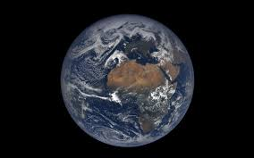

La Terre, notre planète, est la seule connue pour abriter la vie grâce à son atmosphère et à sa biodiversité.
Elle est riche en eau et présente une grande variété de climats et d'écosystèmes.
Son satellite naturel, la Lune, stabilise son inclinaison et influence les marées.
* Type : Planète tellurique
* Distance moyenne au Soleil : ~149,6 millions de km
* Masse : 5,97×1024 kg
* Rayon : ~6 371 km
* Température moyenne : ~15 °C